충남대학교 컴퓨터공학과 김상하 교수님의 "컴퓨터 네트워크" 강의를 필기한 내용입니다.
다소 잘못된 내용과 구어적 표현 이 포함되어 있을 수 있습니다.
TELNET
- Remote Logging을 위한 프로토콜인데
- 요즘의 클라우드 컴퓨팅마냥 옛날에도 조금 다른 형태의 클라우드 비스무리한게 서비스되었다
- 강력한 CPU를 가진 중앙 컴퓨터가 있고, 거기에 간단한 CPU를 가진 컴퓨터들이 원격으로 접속해서 작업을 요청하고 그 결과를 받는 것 - Timesharing Environment라고 한다
- Terminal을 이용해 서버와 클라이언트가 소통하는데 이게 실제로는 사용자가 자기컴퓨터갖고 노는게 아니기 때문에 Virtual Terminal Service라는 말을 사용함
- 서버에 여러 사용자가 각자의 공간과 접근권한, ID, PW등을 갖는 것을 Logging이라고 한다
- 이때 Local 환경과 Remote환경의 차이를 줄이기 위한 프로토콜이 TELNET인 것이다
ASCII, Encoding Issue
- 일단 뭐 ASCII(American Standard Code for Information Interchange) 가 뭔지 이미 알고 있겠지만 화면에 표시될 수 있는 문자들 및 여러 컨트롤 명령들을 8비트로 매핑해놓은 것이다
- 그래서 구성이 어케되냐면 8비트(1바이트)이기 때문에 0~255까지의 숫자로 매핑이 되는데
- 1~31까지는 화면에 출력되지 않는(Non-Printable) 시스템 코드 이다
- 뭐 종종 보이는 CR(커서 이동), LF(개행)등이 여기에 드감
- 32~127까지는 화면에 출력되는(Printable) 코드 이다
- 알파벳 대소문자와 <, > @ 등등의 여러 기호들이 여기에 드감
- 그리고 128~255까지는 운영체제나 프로그램에서 자율적으로 매핑해서 사용할 수 있는 코드 이다
- ctrl + D같은애들이 숫자로 변환되고 이게 각자의 운영체제나 프로그램에 맞게 해석되어 사용됨
- 근데 여기서 문제가 뭐냐면 0~127까지는 표준으로 정해져있지만 128부터는 자율적으로 프로그래밍될 수 있게 함으로써 환경이 달라지면 다르게 해석된다는 것이다
- 예를들어서 DOS에서는 EOF가 ctrl + Z이지만 UNIX에서는 ctrl + D로 매핑되어있는 것
- 그리고 ASCII말고 다른 인코딩 포맷을 사용하는 운영체제나 프로그램도 존재한다
- DOS나 UNIX는 ASCII를 사용하지만
- Windows NT나 IBM S/390같은애들은 Unicode나 EBCDIC같은 인코딩 방식을 사용하는 등
- 따라서 환경이 달라져도 원래 의도에 맞게 해석되도록 변환하는 놈이 필요함
Local Log in
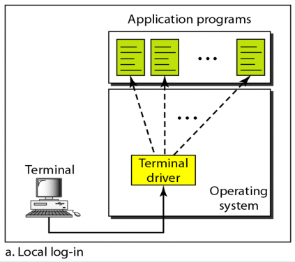
- TELNET의 작동원리를 정확하게 이해하기 위해서는 일단 Local환경에서 어떻게 Logging이 되는지 알아볼 필요가 있다
- 우리가 Terminal 창을 켜서 키보드를 하나 누르면 다음과 같은 일이 일어난다
- 키보드가 눌린 키보드에 대한 전기신호를 숫자의 형태로 Terminal Driver에게 보낸다
- 여기서 알아야할게 키보드가 보내는 숫자 전기 신호는 뭐 ASCII같은 인코딩을 사용하는게 아니라 해당 키보드에서 사용하는 독자적인 수치를 이용한다는 것이다
- 그럼 Terminal Driver는 그 전기 신호를 운영체제가 알아들을 수 있는(사용하고 있는) 인코딩 방식으로 변환해서 운영체제에게 전달한다
- 즉, 키보드가 만들어낸 전기 신호를 운영체제가 알아들을 수 있는 ASCII 등의 포맷으로 인코딩하는 것이 Terminal Driver가 하는 일이다
- 운영체제는 Terminal Driver가 준거를 보고 그에 맞는 Application Program에게 전달하게 된다
- 키보드가 눌린 키보드에 대한 전기신호를 숫자의 형태로 Terminal Driver에게 보낸다
- 예를들면 이렇게 된다는거임
- Terminal창을 열고 cd a를 칠라고 했는데 실수로 cd ab를 쳐서 백스페이스를 눌렀을때
- 키보드가 생성해내는 Stream을 예를들어서 1 2 3 4 5 6이라고 해보자 - 걍 예시임 1이 c에 대한 신호고 2가 d에 대한 신호고 스페이스바가 3이고 뭐 이런식임
- 그럼 Terminal Driver는 저거를 받아들고 (운영체제가 ASCII를 사용한다는 가정하에) 66 67 20 64 65 07로 번역해서 운영체제한테 전달한다
- 그럼 운영체제가 뭐 zsh같은 쉘한테 “cd ab를 출력한 다음에 b를 화면에서 지워라” 같은 메세지를 전달하게 되는 것이다
Remote Log in
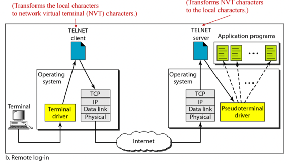
- 근데 위에서 말한거같은 Timesharing Environment에서는 Local과 Remote의 운영체제나 프로그램등이 다를 가능성이 농후하다
- 따라서 저런걸 이용하기 위해서는 Encoding 방식을 변환해야 될 필요가 있고 그걸 TELNET에서 지원하는거다
- 이놈의 핵심 원리는 운영체제 등의 환경에 종속적인 인코딩을 환경에 종속적이지 않은 인코딩인 NVT(Network Virtual Terminal) 으로 변환해서 상대방에게 보내고, 상대방이 그걸 받으면 그걸 자신의 환경에 맞게 변환해서 사용하게 된다는 것이다
- NVT(Network Virtual Terminal) 에 대한 얘기를 좀 해보면
- 위에서 0~127까지는 표준화가 되어있지만 128이후로는 각기 다르다고 했잖여
- 따라서 NVT(Network Virtual Terminal) 에서도 127까지는 ASCII와 동일하지만 그 이후부터는 독자적인 포맷을 사용함
- 그리고 이런 포맷으로 TELNET끼리 통신한 다음 각자의 Local에 맞게 인코딩방식을 바꾸는거다
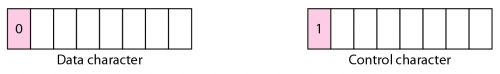
- 0~127까지는 최상위비트가 0이므로 0으로 시작할 경우에는 데이터 코드로 인식하고 이것에 대해서는 별도의 번역을 하지 않지만
- 128~255까지는 최상위비트가 1이므로 1로 시작할 경우에는 컨트롤 코드로 인식하고 운영체제에 맞는 번역을 진행하게 된다
- 이제 작동과정을 보면
- Local에서 작동하는건 동일하게 이루어진다 - 키보드 신호가 Local의 운영체제에 맞는 포맷으로 인코딩되어 운영체제에 전달된다
- 그럼 그 다음에는 운영체제가 Application인 TELNET Client에게 Local Env Encoding Stream을 전달한다
- 키보드신호가 아니고 Local 운영체제가 사용하는 인코딩으로 도착한다는거 헷갈리지 말그라
- TELNET Client는 해당 Stream을 NVT(Network Virtual Terminal) 로 변환한 다음 TCP / IP를 이용해 Server에게 보낸다
- 주목해야될거는 TELNET이 TCP / IP를 이용한다는 것과
- 만국공통어 정도로 비유될 수 있는 NVT(Network Virtual Terminal) 로 번역된다는 거다
- 그럼 그걸 Server에서는 TCP / IP를 통해 받아서 TELNET Server까지 올라가겠지
- TELNET Server는 NVT를 받은 뒤에 자신의 운영체제가 이해할수있는(Understandable)인코딩으로 변환해서 Pseudo-Terminal Driver에게 보낸다
- 여기서 헷갈릴만한게 TELNET Server가 번역한 다음에 OS가 아닌 Pseudo-Terminal Driver에게 보낸다는 것 이다
- 이렇게 하는 이유는 OS는 무조건 Terminal Driver한테서만 받도록 설계되어 있기 때문에 TELNET Server가 직접적으로 OS한테 보내지 못하고 저런 가짜 Terminal Driver 를 통해 보내게 되는 것
- Pseudo-Terminal Driver는 그걸 OS에게 전달하고 OS가 그에 맞는 Application Program에게 Stream을 전달한다
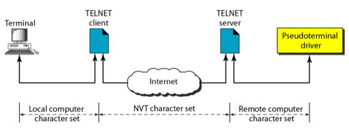
- 그래서 위의 그림처럼 표현할 수도 있더라
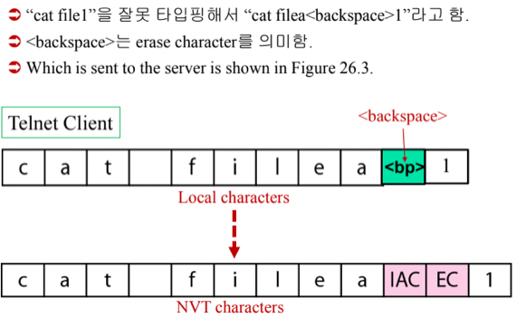
- 예시임 - 이런식으로 진행된다
Electronic Mail Service
Architecture
- 여기서 System이라는 말이 종종 나오는데 이건 Mail Server 와 LAN으로 연결되어있는 범위정도로 이해하면 될거같다
Scenario 1 - Both Participant are Connected Direclty to the Same System
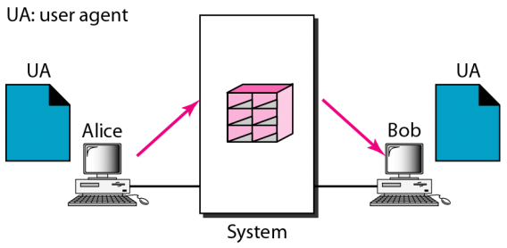
- 회사 사내 망에 송수신자 모두가 연결되어있는 경우 정도로 이해하면 된다
- 여기서 User Agent는 메일을 작성하거나 출력하거나 목록을 보여주는 등의 사용자와 소통하는 작업과 (서버랑 같은 시스템에 있을 경우) 메일 서버의 메일 박스에 넣어놓거나 가져오는 정도의 메일 송수신이 가능한 프로세스라고 생각하면 된다
- 따라서 모든 참여자가 같은 시스템에 연결되어있을때 에는 위 그림처럼 사용자 각각에 대한 메일박스들을 가지고 있는 메일서버와 UA(User Agent) 만 있으면 메일을 주고받을 수 있음
- 송신자가 UA를 통해 메일을 작성하고 전송하기를 하면 UA는 그걸 Mail Server의 수신자 메일박스에 넣고, 수신자는 메일박스에 있는 메일을 받아보게 되는 과정으로 전송된다
Scenario 2 - Both Participants are Connected to Separate System
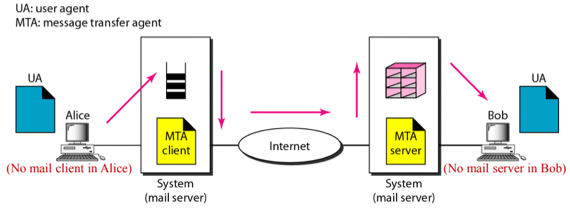
- 이건 내가 사내망에 접속되어있고 다른 사내망에 접속되어있는 사람한테 보내는 경우 정도로 생각하면 된다
- 시스템에서 시스템으로 메일을 보내기 위해서는 MTA(Main Transfer Agent) 가 필요하다
- MTA에 대해 기억할것은 얘는 Client-Server모델을 이용하기 때문에 Client의 적극적인 송신에 Server는 수동적으로 수신할 수 밖에 없다는 것이다
- 즉, Client가 메일을 보내고 Server가 받기 때문에 하나의 Client-Server Pair에 한해서, 그리고 실제 메시지에 한해서는 단방향 통신이라고 말할 수 있는거다
- 이말을 오해하면 안되는게 그렇다고 Server가 Client에게 통신을 안한다는게 아니고 실제 메일이 전달되는거에 한해서만 단방향이라는 것 - 뭐 뒤에서도 배우겠지만 Connection과 Terminate등의 절차를 거치며 Control Message는 양방향으로 주고받게 된다
- 어쨋든 모든 참여자가 시스템에 연결되어있지만 시스템이 다를 경우 에는 위 그림처럼 UA를 통해 시스템에게 메일을 보내면 그걸 MTA Cilent가 다른 시스템으로 보내고, 다른 시스템에 있는 MTA Server가 그걸 받아서 메일함에 넣어서 수신자가 가져가게 되는 과정이 이루어진다
- 따라서 UA 두개와 한쌍의 MTA Client-Server가 필요함
Scenario 3 - Some Participant are not Connected to System
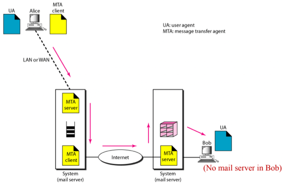
- 이건 내가 집에서 다른 사내망에 연결되어있는 사람에게 메일을 보내는 경우 정도로 생각하면 되는데
- 송신자가 자신의 메일 서버 시스템에 연결되어있지 않기 때문에 송신자는 자신의 디바이스에 있는 MTA Client로 자신의 메일 서버 시스템의 MTA Server로 우선 메일을 보내는 작업을 한다
- 그럼 그 다음부터는 Scenario 2와 동일함 - 수신자의 메일 서버 시스템의 MTA Server로 메일을 보내게 되고 그럼 MTA Server가 메일박스에 넣어놓음으로써 수신자가 받아가는 것
- 따라서 이 경우에는 두개의 UA와 두개의 MTA Client-Server 쌍이 필요하게 됨
Scenario 4 - Both Participant are not Connected to System
- 이게 제일 일반적인 경우임 - 내가 집에서 다른 집에 있는 사람한테 메일을 보내는 경우
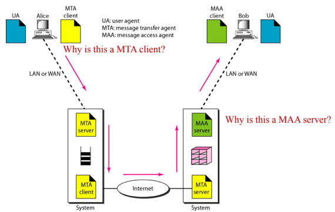
- 여기서는 수신자가 메일을 가져가는 과정 외에는 전부 동일하다 - MTA Client로 자신의 Mail Server의 MTA Server 에게 보내고, 거기서는 또 Mail Server의 MTA Client로 상대방의 Mail Server의 MTA Server에게 보내면 메일함에 담기게 됨
- 근데 이경우에는 그냥 수신자에게 메일함에 있는것을 줄 수 있는게 아니다 - Mail Server가 수신자에게 주려고 해도 저놈이 출무중이면(뭐 컴터가 꺼져있다거나) 메일을 받지 못하기 때문
- 그리고 저넘이 언제 접속할지도 모름 - 따라서 Mail Server는 저놈이 달라고 할때까지 암것도 안하는 아몰랑 전략을 취한다
- 즉, 수신자가 Mail Server에게 나에게 온 메일을 자기한테 달라고 요청 하게 되는 것
- 이런걸 대행해주는 프로세스를 MAA(Mail Access Agent) 라고 하는데 수신자측이 메일을 받으니까 MAA Server일거라고 생각하면 경기도 오산시 오산낙지다
- 메일을 달라고 요청 해야되니까 통신을 먼저 시작하게 되고, 따라서 수신자 측이 MAA Client 이고 Mail Server쪽이 MAA Server 가 되는 것
- 그래서 전체적인 과정을 정리해보면 수신자의 MTA Client가 자신의 Mail Server’s MTA Server로 보내고, 그 Mail Server’s MTA Client가 상대방의 Mail Server’s MTA Server로 보내면 메일함에 넣어놓고 존버하다가 상대방 컴터의 MAA Client가 Mail Server’s MAA Server로 메일함에 있는거 싹다 주세요 하면 그때 메일함에 있는거 보내주는 것
- 따라서 위 그림에서 보이는것처럼 두개의 UA, 두개의 MTA Client-Server 쌍, 한개의 MAA Client-Server쌍이 필요하다
UA, MTA, MAA
- 뭐 위에서 다 말하긴 했지만 총정리하면
- UA(User Agent) 는 참여자와 소통하며 메일 작성하거나 도착한 메일을 출력하거나 하는 식의 UI에 해당하는 작업 및 같은 시스템에 있는 Mail Server의 메일함에 메일을 넣거나 가져오는 작업만 가능한 프로세스이고
- 뭐 옛날 고조선사람들은 Terminal Command형태의 UA를 사용했다네
- MTA(Mail Transfer Agent) 는 다른 시스템에 있는 Mail Server한테 메일을 보내려고 할때 사용되는 프로세스로 메일을 보내는쪽이 Client, 받는쪽이 Server가 되는 것이다
- Client가 메일을 보내는 쪽이기 때문에 Push Functionality를 제공한다고들 함
- MAA(Mail Access Agent) 는 다른 시스템에 있는 Mail Server한테서 메일을 받아오려고 할 때 사용되는 프로세스로 메일을 받는쪽이 Client, 보내는쪽이 Server가 된다
- 얘는 Client가 메일을 받아오는 쪽이기 때문에 Pull Functionality를 제공한다고 표현하드라
MIME
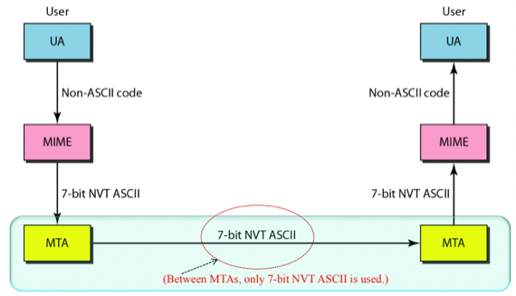
- 얘는 UA와 MTA사이에서 메시지의 인코딩을 담당하는 놈인데
- MTA는 7-bit NVT ASCII만 보낼 수 있다 - 즉, Printable Character만 보낼 수 있고 최상위 비트는 무조건 0이어야 된다는 것
- 근데 옛날에야 뭐 텍스트만 보내도 흡족했지만 지금은 파일도 보내고 동야도 보내고 해야되는데 7-bit NVT ASCII로는 저런 bit stream을 보낼 수가 없음
- 그래서 bit stream을 7-bit NVT ASCII로 변환하고 그걸 다시 bit stream으로 변환하는 역할을 하는놈이 MIME(Multipurpose Internet Mail Extensions) 이다
- 인코딩방식은 여러개 있는데 대표적으로 니가 아는 그 Base64로 인코딩한담에 나머지 2비트는 00으로 채워서 보내고 받을때도 00빼고 합치는 식으로 한다
SMTP
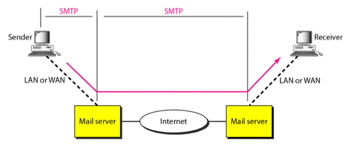
- SMTP(Simple Mail Transfer Protocol) MTA 프로토콜로 제일 유명하고 현재 거의 유일하게 사용되고 있는 프로토콜이다
- 통신은 Connection Establishment, Mail Transfer, Connection Termination순서로 진행된다
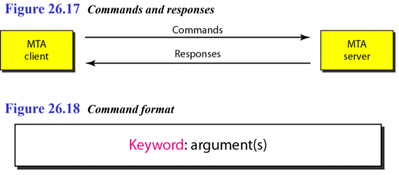
- 위 그림처럼 MTA Client는 COMMAND ARGUMENTS …의 포맷으로 Commands를 보내며
- 그에 대한 응답으로 MTA Server는 STATUS_CODE STATUS_MSG의 형태로 Response를 보낸다
예시
- 예시를 보면서 통신 과정 알아보자구
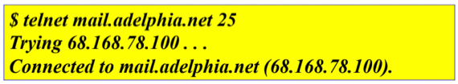
- 위처럼 telnet $MAIL_SERVER_DOMAIN 25 명령어로 시작하게 된다
- 당연히 $MAIL_SERVER_DOMAIN은 메일 서버의 도메인이고
- 25는 포트 번호이다 - SMTP는 25의 포트 번호를 사용하더라
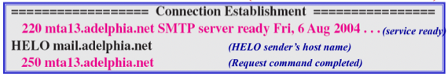
- 그럼 이래됨 - 예제에서 분홍색은 Response이고 검은색이 Command이다
- 일단 220은 Service Ready → 메일 서버가 준비되었다는 뜻임
- 그럼 그상태에서 HELO $MAIL_SERVER_DOMAIN을 보내면 Connection을 시도하게 됨 - HELO가 주어진 도메인이랑 Connection을 하겠다는 Command임
- Connection이 이루어졌으면 250 메시지가 오게 됨 - 요청이 완료되었다는 것으로 Connection이 정상적으로 됐다는 소리임
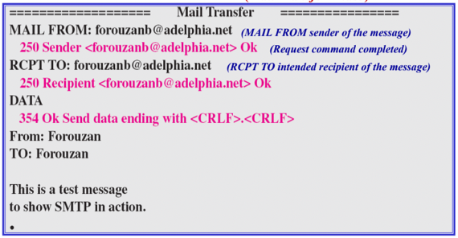
- 솔직히 걍 읽어봐도 뭔말알이긴함
- MAIL FROM $SRC로 보내는 사람 메일 주소 명시 가 가능하고
- RCPT TO $DST로 받는 사람 메일 주소 명시 가 가능하며
- DATA 로 이제 메일을 보내겠다고 알려주게 되며
- 354가 오면 메일 내용을 적으면 됨
- 그리고 Response Message의
<CRLF>.<CRLF>에서 알 수 있듯이 개행 + . + 개행으로 메일 본문이 끝났다는 것을 명시하게 된다
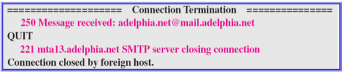
- 그리고 QUIT으로 Termination을 하게 된다
POP3, IMAP4
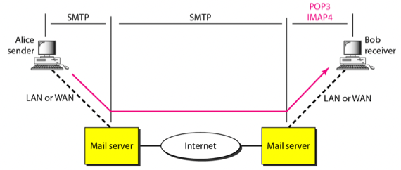
- POP3(Post Office Protocol v3) 이랑 IMAP4(Internet Mail Access Protocol) 은 MAA프로토콜이다
- 여기서 알아둬야 할것은
- POP3와 IMAP4모두 user-name과 password를 서버에게 보내 인증하는 과정을 거친 다음에 Pull을 진행한다는 절차적인 거하고
- POP3는 오래됐고 IMAP4는 비교적 최신에 나온 보안성이 강화된 프로토콜이랜다
Web Based Mail
- 이건 간단한건데
- 간단하게 생각하면 Outlook같은걸로 메일 송수신할 수도 있고 아니면 브라우저 드가서 메일 송수신할 수도 있자네
- 이런식으로 End user가 메일링 프로그램을 이용해서 SMTP로 메일을 보내는 것도 가능하지만 브라우저를 이용해 HTTP로 Mail Server에게 push를 하는것도 가능하다
- 하지만 Mail Server간에는 여전히 SMTP로 통신함
Mail Server
- 일단 이메일을 받을때는 무조건 내 메일함이 있는 Mail Server의 MAA Server에게 보내는게 맞는데
- 이메일을 보낼때는 내 메일함이 있는 Mail Server의 MTA Server로 보낼 필요는 없다 - 가까이 있는 Mail Server로 보내도 됨
- 이건 왜냐하면 나의 메일함이 있는 Mail Server가 아주 멀리 있는 상황에서 나랑 가까운 놈한테 메일을 보낼때 저짝으로 보내게 되면 멀리 돌아서 메일이 도착하게 되는데 이건 매우 비효율적이기 때문
- 따라서 예전에는 주변에 있는 아무 Mail Server의 MTA Server로 보내는게 가능했다 - 근데 요즘은 내 메일이 정체를 알 수 없는 Mail Server에 도착한다는 것이 보안상 좋지 않기 때문에 대부분의 Mail Server들은 사용자 인증과정을 거쳐 신뢰할만한 놈인지 확인한 다음에야 Mail의 수신을 받아준다
FTP
- FTP(File Transfer Protocol) 은 말그대로 파일을 전송할때 사용하는 프로토콜이고
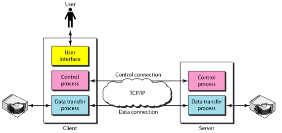
- FTP에서 핵심적인 내용은 FTP는 TCP를 사용하며 Connection을 두개 맺는다는 것이다
- 하나는 전송과정에서 Command를 주고 받기 위한 Connection이고 이것은 File Transfer Session이 지속되는 동안 계속 연결되게 된다
- 그리고 나머지 하나는 실제로 파일이 전송되는 Connection이고 얘는 파일 하나가 보내질때마다 연결을 하게 된다 - 파일 하나를 보내고 나서 또 다른 파일을 보낼때는 연결을 끊었다가 다시 연결하여 전송하게 됨
Control Connection
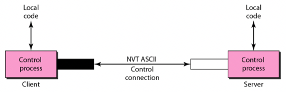
- Control Connnection은 위에서 말한것처럼 File Transfer Session이 지속되는 내내 연결되어 있고 파일전송간 Command를 주고받기 위해 사용하는데
- Port 21을 사용하고
- 7-bit NVT ASCII를 사용한다 - 당연히 Command만을 주고받기 때문에 Printable한 bitstream만 주고받게 됨
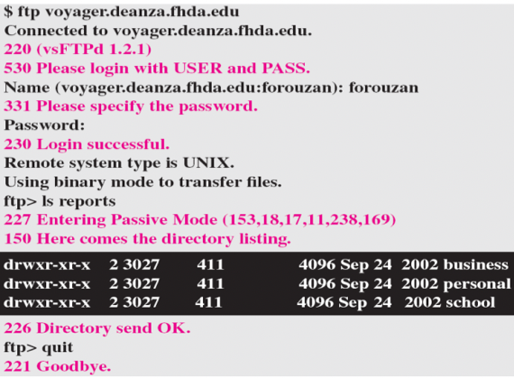
- 그리고 SMTP와 유사하게 Client가 Command 와 Argument로 이루어진 요청을 보내고 Server가 그에 대한 응답을 3-digit code로 보내는 식으로 진행된다
- 위의 예시는 그냥 읽어보는 걸로도 충분함
Data Connection
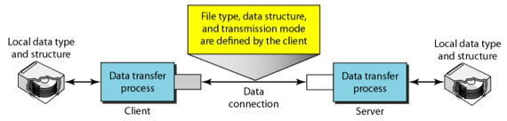
- File Transfer에서 Data를 보낼때의 어려운 점은 Command를 보낼때와는 다르게 파일 타입, 인코딩 방식, 파일 디렉토리의 구조들, 파일 이름 등등이 표준화시킬 수 없기 때문에 이러한 다양성을 극복해야 했다는 것이다
- 뭐 이런 어려운 점만 있었고 이걸 어떻게 극복했는지는 몰라도 된댄다